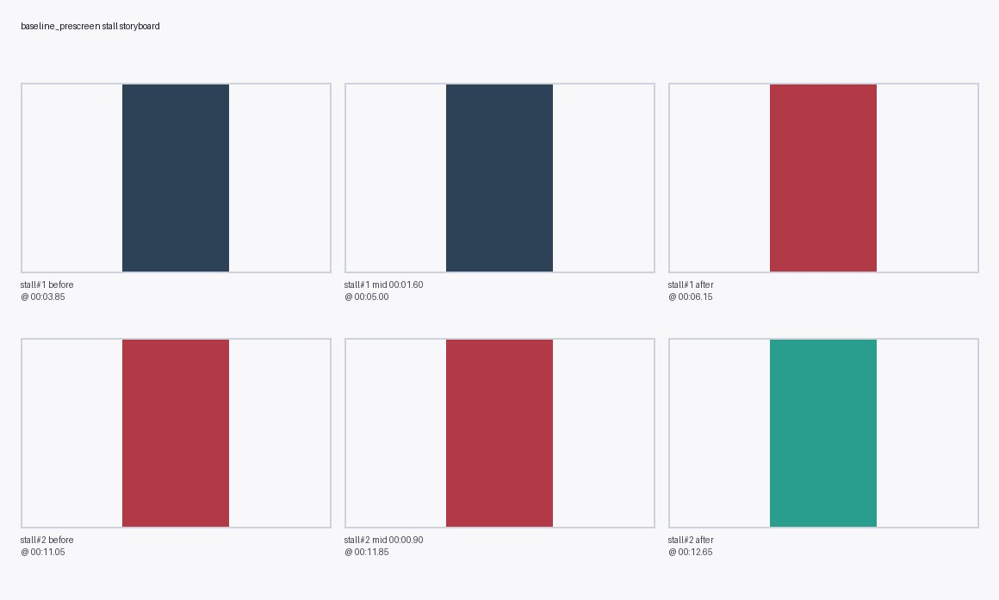
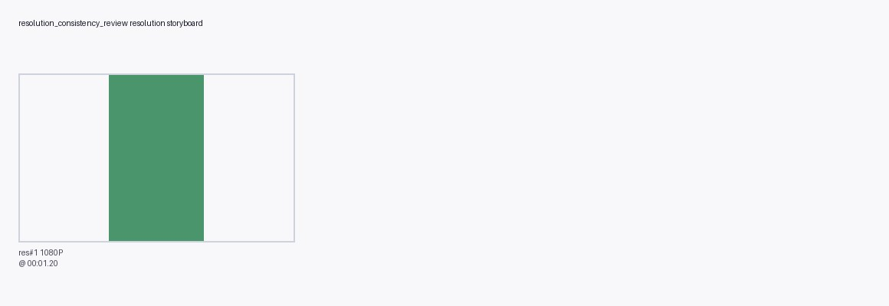
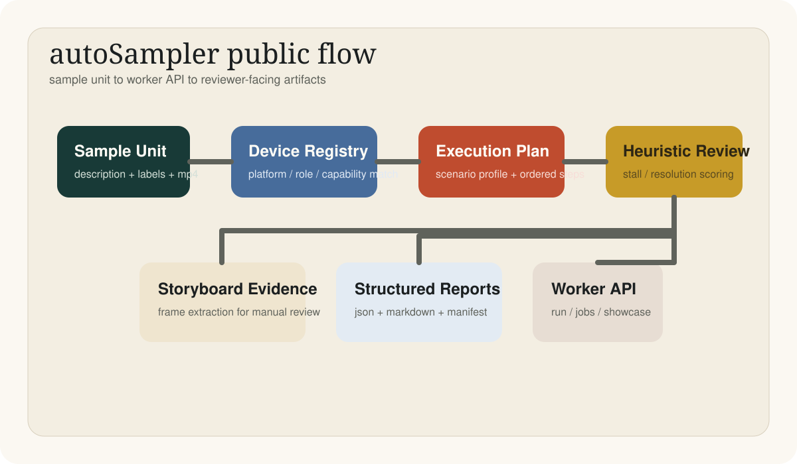
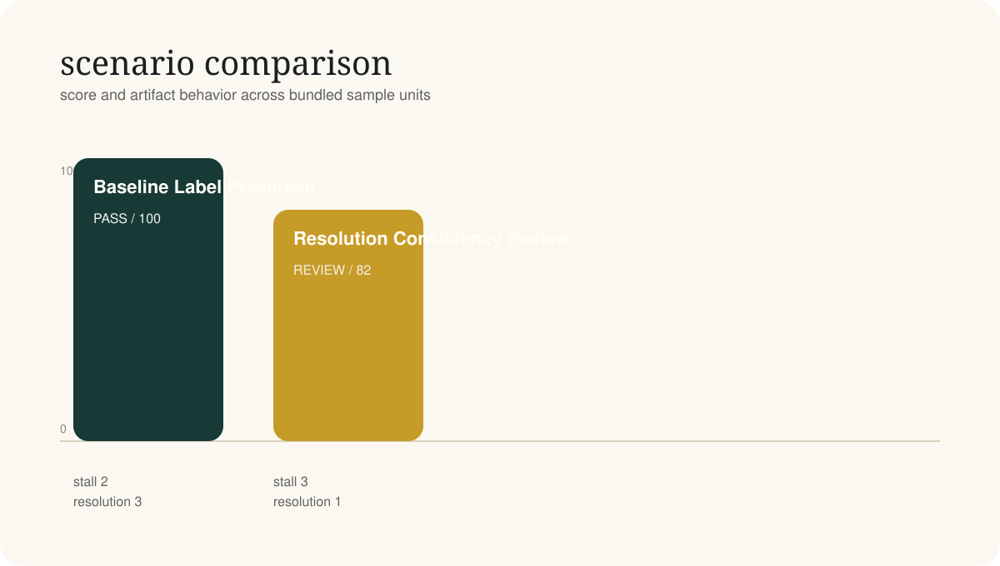
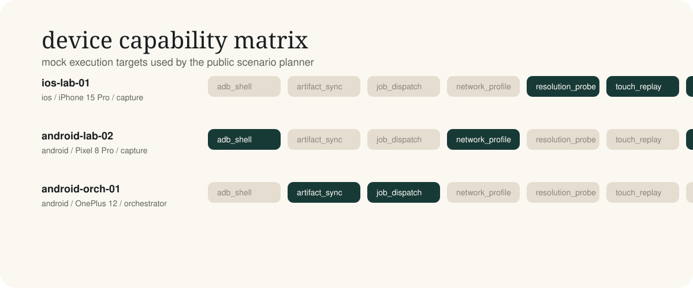
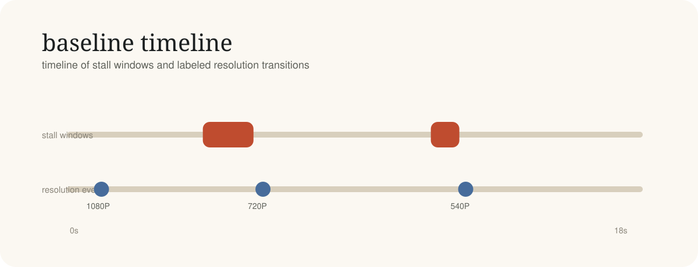
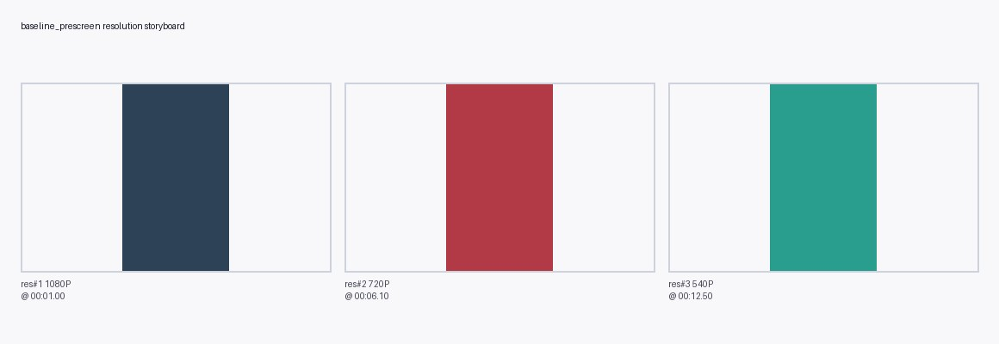
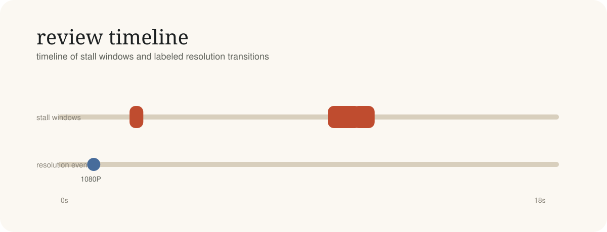
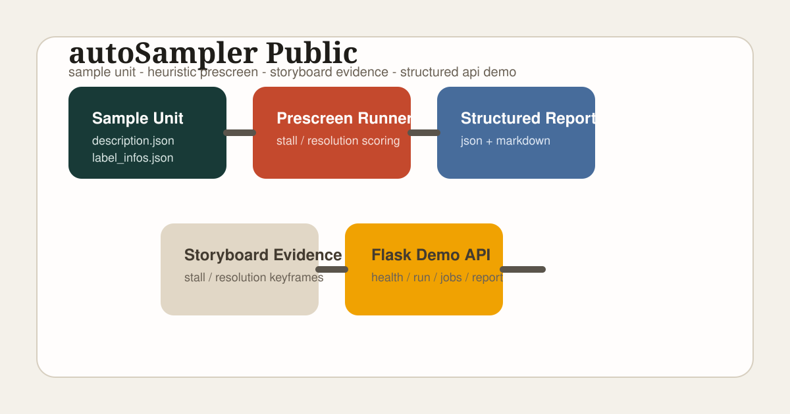

prescreen
PASSBaseline Label Prescreen
Mock prescreen worker that evaluates a sampled unit, extracts storyboard evidence, and emits structured review artifacts.
- Score
- 100
- Bandwidth
- 180 kbps
- Stalls
- 2
- Resolution events
- 3
- stall
- resolution
- report
worker-style media quality review
Sample-unit ingestion, device selection, execution planning, heuristic label review, storyboard evidence, and structured artifacts are organized into a compact public system.


project signal
system composition
Sample unit enters the queue with description metadata and screen recording.
Device registry resolves a capture target and execution profile.
Scenario planner expands worker steps into a deterministic run plan.
Heuristic scorer validates stall and resolution labels against timing and bandwidth.
Storyboard generator exports reviewer-friendly image evidence.
JSON and Markdown artifacts are returned through CLI and API surfaces.

The public repo keeps the same shape as a larger internal workflow: queue-style entry, execution targeting, scoring, evidence generation, and downstream artifact delivery.
generated visuals



scenarios
prescreen
PASSMock prescreen worker that evaluates a sampled unit, extracts storyboard evidence, and emits structured review artifacts.
resolution_audit
REVIEWResolution-oriented audit path that highlights self-consistency issues between bandwidth constraints, labeled events, and final playback quality.
evidence surface

baseline execution trace
review findings
timeline exports


service surface
GET /demo/devicesGET /demo/scenariosGET /demo/scenarios/<scenario_name>GET /demo/showcasePOST /demo/runPOST /demo/jobsPOST /demo/jobs/processpython3 tools/run_worker_server.py
curl -X POST http://127.0.0.1:7777/demo/run \
-H "Content-Type: application/json" \
-d @samples/payloads/baseline_prescreen.json
python3 tools/export_showcase_bundle.py
python3 tools/build_showcase_page.pyenglish
autoSampler-public is a compact worker-style demo for post-capture media quality review, covering sample ingestion, device selection, scenario planning, heuristic validation, storyboard evidence, and structured report delivery.
中文
autoSampler-public 是一个面向采样后处理链路的轻量公开演示项目，覆盖 sample unit 读取、 设备选择、场景执行规划、标签规则校验、storyboard 证据生成，以及结构化报告输出。
interview mode